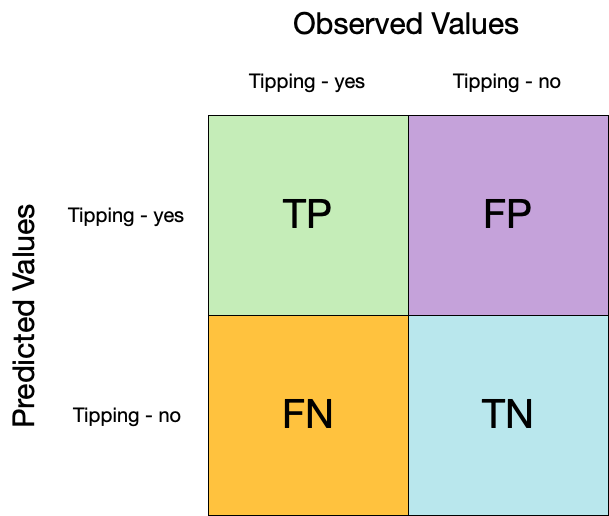
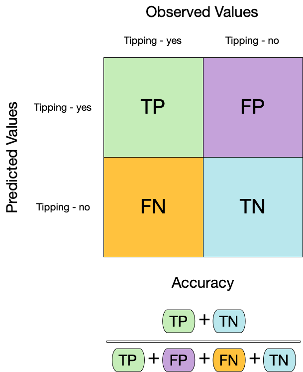
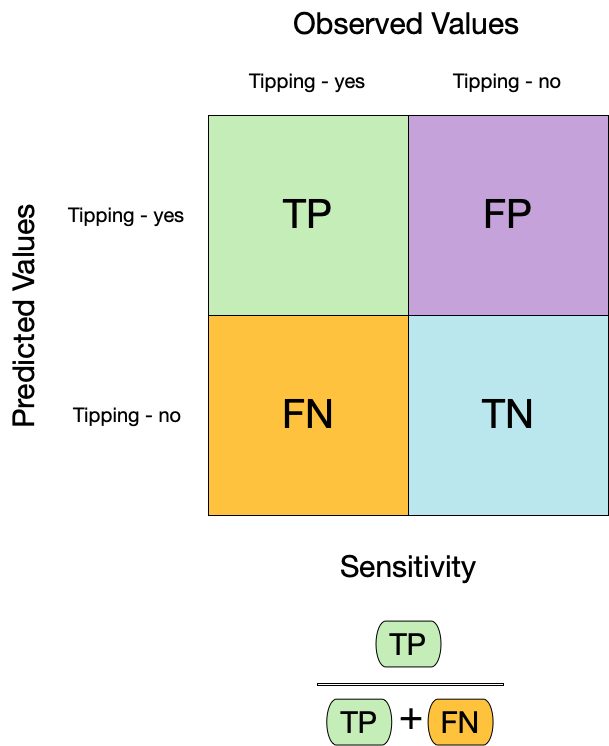
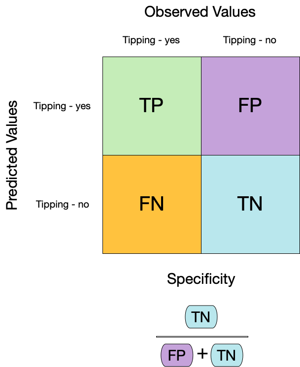

library(tidymodels)
set.seed(123)
cls_split <- initial_split(cls_data_2026, prop = 0.8)
cls_train <- training(cls_split)
cls_test <- testing(cls_split)
tree_spec <- decision_tree(cost_complexity = 0.0001, mode = "classification")
cls_wflow <- workflow(class ~ ., tree_spec)
cls_fit <- fit(cls_wflow, cls_train)4 - Evaluating models
Practical Machine Learning with tidymodels
Confusion matrix 


Confusion matrix 
Confusion matrix 
Metrics for model performance 

Dangers of accuracy 
We need to be careful of using accuracy() since it can give “good” performance by only predicting one way with imbalanced data:
Your turn

The probably package was used to make the calibration plots:
Try the other calibration curve methods in probably:
Do you prefer one over the others?
Metrics for model performance 
We can use metric_set() to combine multiple calculations into one
Metrics for model performance 
Metrics and metric sets work with grouped data frames!
lr_re_pred |>
mutate(group = rep_len(LETTERS[1:3], nrow(cls_train))) |>
group_by(group) |>
cls_metrics(truth = class, estimate = .pred_class, .pred_class_1)
#> # A tibble: 6 × 4
#> group .metric .estimator .estimate
#> <chr> <chr> <chr> <dbl>
#> 1 A accuracy binary 0.899
#> 2 B accuracy binary 0.906
#> 3 C accuracy binary 0.932
#> 4 A brier_class binary 0.0689
#> 5 B brier_class binary 0.0693
#> 6 C brier_class binary 0.0613Dangers of overfitting ⚠️ 
lr_fit |>
augment(cls_train) |>
print(n = 5)
#> # A tibble: 800 × 6
#> .pred_class .pred_class_1 .pred_class_2 pred_1 pred_2 class
#> <fct> <dbl> <dbl> <dbl> <dbl> <fct>
#> 1 class_1 0.832 0.168 -1.35 -0.446 class_1
#> 2 class_1 0.892 0.108 -0.354 -0.181 class_1
#> 3 class_2 0.0434 0.957 0.105 1.12 class_2
#> 4 class_1 0.999 0.000548 0.0203 -1.20 class_1
#> 5 class_1 0.963 0.0373 -0.831 -0.607 class_1
#> # ℹ 795 more rowsWe call this “resubstitution” or “repredicting the training set”
Dangers of overfitting ⚠️ 
We call this a “resubstitution estimate”
Dangers of overfitting ⚠️ 
Dangers of overfitting ⚠️ 
Why aren’t the numbers very different?
Can basic logistic regression overfit?
⚠️ Remember that we’re demonstrating overfitting
⚠️ Don’t use the test set until the end of your modeling analysis
Dangers of overfitting ⚠️ 
What if we want to compare more models?
And/or more model configurations?
And we want to understand if these are important differences?
Cross-validation

Cross-validation

Your turn
If we use 10 folds, what percent of the training data
- ends up in analysis
- ends up in assessment
Cross-validation 

vfold_cv(cls_train) # v = 10 is default
#> # 10-fold cross-validation
#> # A tibble: 10 × 2
#> splits id
#> <list> <chr>
#> 1 <split [720/80]> Fold01
#> 2 <split [720/80]> Fold02
#> 3 <split [720/80]> Fold03
#> 4 <split [720/80]> Fold04
#> 5 <split [720/80]> Fold05
#> 6 <split [720/80]> Fold06
#> 7 <split [720/80]> Fold07
#> 8 <split [720/80]> Fold08
#> 9 <split [720/80]> Fold09
#> 10 <split [720/80]> Fold10Cross-validation 
What is in this?
Cross-validation 
Cross-validation 
We’ll use this setup:
set.seed(343)
cls_folds <- vfold_cv(cls_train, v = 10)
cls_folds
#> # 10-fold cross-validation
#> # A tibble: 10 × 2
#> splits id
#> <list> <chr>
#> 1 <split [720/80]> Fold01
#> 2 <split [720/80]> Fold02
#> 3 <split [720/80]> Fold03
#> 4 <split [720/80]> Fold04
#> 5 <split [720/80]> Fold05
#> 6 <split [720/80]> Fold06
#> 7 <split [720/80]> Fold07
#> 8 <split [720/80]> Fold08
#> 9 <split [720/80]> Fold09
#> 10 <split [720/80]> Fold10Set the seed when creating resamples
Evaluating model performance 

We can reliably measure performance using only the training data 🎉
Comparing metrics 
How do the metrics from resampling compare to the metrics from training and testing?
The Brier score previously was
- 0.067 for the training set
- 0.074 for test set
Remember that:
⚠️ the training set gives you overly optimistic metrics
⚠️ the test set is precious
Your turn
Rerun the same code three times with different random number seeds.
How much do the results change?
Evaluating model performance 
# Save the assessment set results
ctrl_rs <- control_resamples(save_pred = TRUE)
cls_res <- fit_resamples(lr_wflow, cls_folds, control = ctrl_rs)
cls_res
#> # Resampling results
#> # 10-fold cross-validation
#> # A tibble: 10 × 5
#> splits id .metrics .notes .predictions
#> <list> <chr> <list> <list> <list>
#> 1 <split [720/80]> Fold01 <tibble [3 × 4]> <tibble [0 × 4]> <tibble [80 × 6]>
#> 2 <split [720/80]> Fold02 <tibble [3 × 4]> <tibble [0 × 4]> <tibble [80 × 6]>
#> 3 <split [720/80]> Fold03 <tibble [3 × 4]> <tibble [0 × 4]> <tibble [80 × 6]>
#> 4 <split [720/80]> Fold04 <tibble [3 × 4]> <tibble [0 × 4]> <tibble [80 × 6]>
#> 5 <split [720/80]> Fold05 <tibble [3 × 4]> <tibble [0 × 4]> <tibble [80 × 6]>
#> 6 <split [720/80]> Fold06 <tibble [3 × 4]> <tibble [0 × 4]> <tibble [80 × 6]>
#> 7 <split [720/80]> Fold07 <tibble [3 × 4]> <tibble [0 × 4]> <tibble [80 × 6]>
#> 8 <split [720/80]> Fold08 <tibble [3 × 4]> <tibble [0 × 4]> <tibble [80 × 6]>
#> 9 <split [720/80]> Fold09 <tibble [3 × 4]> <tibble [0 × 4]> <tibble [80 × 6]>
#> 10 <split [720/80]> Fold10 <tibble [3 × 4]> <tibble [0 × 4]> <tibble [80 × 6]>Evaluating model performance 


probably has a nice interface for calibration curves:
The out-of-sample predictions are pooled before computing the calibration curve.
Evaluating model performance 
# Save the assessment set results
cls_preds <- collect_predictions(cls_res)
cls_preds |> slice(1:5)
#> # A tibble: 5 × 7
#> .pred_class .pred_class_1 .pred_class_2 id class .row .config
#> <fct> <dbl> <dbl> <chr> <fct> <int> <chr>
#> 1 class_1 1.000 0.000371 Fold01 class_1 14 pre0_mod0_post0
#> 2 class_2 0.267 0.733 Fold01 class_1 24 pre0_mod0_post0
#> 3 class_1 0.997 0.00253 Fold01 class_1 32 pre0_mod0_post0
#> 4 class_1 0.748 0.252 Fold01 class_1 41 pre0_mod0_post0
#> 5 class_1 1.000 0.000323 Fold01 class_1 42 pre0_mod0_post0Evaluating model performance 
cls_preds |>
group_by(id) |>
cls_metrics(truth = class, estimate = .pred_class, .pred_class_1)
#> # A tibble: 20 × 4
#> id .metric .estimator .estimate
#> <chr> <chr> <chr> <dbl>
#> 1 Fold01 accuracy binary 0.862
#> 2 Fold02 accuracy binary 0.85
#> 3 Fold03 accuracy binary 0.988
#> 4 Fold04 accuracy binary 0.925
#> 5 Fold05 accuracy binary 0.888
#> 6 Fold06 accuracy binary 0.925
#> 7 Fold07 accuracy binary 0.925
#> 8 Fold08 accuracy binary 0.938
#> 9 Fold09 accuracy binary 0.912
#> 10 Fold10 accuracy binary 0.9
#> 11 Fold01 brier_class binary 0.0891
#> 12 Fold02 brier_class binary 0.0908
#> 13 Fold03 brier_class binary 0.0245
#> 14 Fold04 brier_class binary 0.0647
#> 15 Fold05 brier_class binary 0.0974
#> 16 Fold06 brier_class binary 0.0588
#> 17 Fold07 brier_class binary 0.0573
#> 18 Fold08 brier_class binary 0.0659
#> 19 Fold09 brier_class binary 0.0634
#> 20 Fold10 brier_class binary 0.0678Where are the fitted models? 
cls_res
#> # Resampling results
#> # 10-fold cross-validation
#> # A tibble: 10 × 5
#> splits id .metrics .notes .predictions
#> <list> <chr> <list> <list> <list>
#> 1 <split [720/80]> Fold01 <tibble [3 × 4]> <tibble [0 × 4]> <tibble [80 × 6]>
#> 2 <split [720/80]> Fold02 <tibble [3 × 4]> <tibble [0 × 4]> <tibble [80 × 6]>
#> 3 <split [720/80]> Fold03 <tibble [3 × 4]> <tibble [0 × 4]> <tibble [80 × 6]>
#> 4 <split [720/80]> Fold04 <tibble [3 × 4]> <tibble [0 × 4]> <tibble [80 × 6]>
#> 5 <split [720/80]> Fold05 <tibble [3 × 4]> <tibble [0 × 4]> <tibble [80 × 6]>
#> 6 <split [720/80]> Fold06 <tibble [3 × 4]> <tibble [0 × 4]> <tibble [80 × 6]>
#> 7 <split [720/80]> Fold07 <tibble [3 × 4]> <tibble [0 × 4]> <tibble [80 × 6]>
#> 8 <split [720/80]> Fold08 <tibble [3 × 4]> <tibble [0 × 4]> <tibble [80 × 6]>
#> 9 <split [720/80]> Fold09 <tibble [3 × 4]> <tibble [0 × 4]> <tibble [80 × 6]>
#> 10 <split [720/80]> Fold10 <tibble [3 × 4]> <tibble [0 × 4]> <tibble [80 × 6]>🗑️
Metrics for model performance 

Metrics for model performance 

ROC curves
For an ROC (receiver operator characteristic) curve, we plot
- the false positive rate (1 - specificity) on the x-axis
- the true positive rate (sensitivity) on the y-axis
with sensitivity and specificity calculated at all possible thresholds.

ROC curves 
# Assumes _first_ factor level is event; there are options to change that
lr_re_pred |>
roc_curve(truth = class, .pred_class_1) |>
slice(1, 20, 50)
#> # A tibble: 3 × 3
#> .threshold specificity sensitivity
#> <dbl> <dbl> <dbl>
#> 1 -Inf 0 1
#> 2 0.00619 0.0677 1
#> 3 0.0154 0.177 0.998
lr_re_pred |>
roc_auc(truth = class, .pred_class_1)
#> # A tibble: 1 × 3
#> .metric .estimator .estimate
#> <chr> <chr> <dbl>
#> 1 roc_auc binary 0.968ROC curve plot 

Your turn
Compute and plot an ROC curve for your current model.
What data are being used for this ROC curve plot?
Bootstrapping 
set.seed(3214)
bootstraps(cls_train)
#> # Bootstrap sampling
#> # A tibble: 25 × 2
#> splits id
#> <list> <chr>
#> 1 <split [800/287]> Bootstrap01
#> 2 <split [800/294]> Bootstrap02
#> 3 <split [800/292]> Bootstrap03
#> 4 <split [800/293]> Bootstrap04
#> 5 <split [800/279]> Bootstrap05
#> 6 <split [800/287]> Bootstrap06
#> 7 <split [800/297]> Bootstrap07
#> 8 <split [800/291]> Bootstrap08
#> 9 <split [800/307]> Bootstrap09
#> 10 <split [800/296]> Bootstrap10
#> # ℹ 15 more rowsYour turn
Create:
- Monte Carlo Cross-Validation sets
- validation set
(use the reference guide to find the functions)
Don’t forget to set a seed when you resample!
Monte Carlo Cross-Validation 
set.seed(322)
mc_cv(cls_train, times = 10)
#> # Monte Carlo cross-validation (0.75/0.25) with 10 resamples
#> # A tibble: 10 × 2
#> splits id
#> <list> <chr>
#> 1 <split [600/200]> Resample01
#> 2 <split [600/200]> Resample02
#> 3 <split [600/200]> Resample03
#> 4 <split [600/200]> Resample04
#> 5 <split [600/200]> Resample05
#> 6 <split [600/200]> Resample06
#> 7 <split [600/200]> Resample07
#> 8 <split [600/200]> Resample08
#> 9 <split [600/200]> Resample09
#> 10 <split [600/200]> Resample10Validation set 
A validation set is just another type of resample